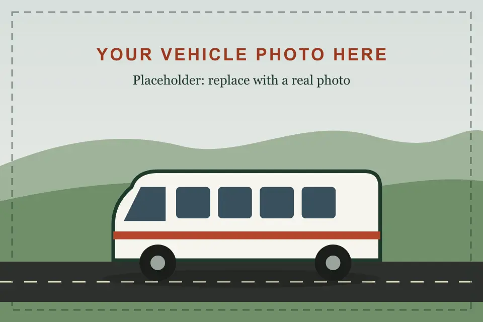

PremiumForce Urbania
- 10 seater
- 13 seater
- 17 seater
- Ideal for
- Families, corporate offsites and groups who want a smoother, quieter ride on long highway runs.
- Features
- Pushback reclining seats
- Roof AC with individual vents
- Wide aisle and high roof
- USB charging points